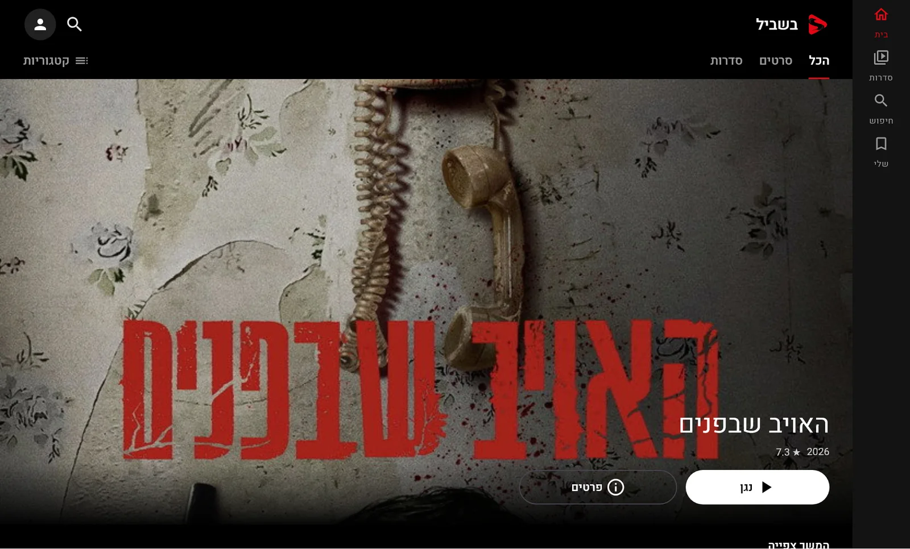

Windows
Windows 10 / 11, מחשב 64 ביט
- לחיצה כפולה על הקובץ ומתקינים. אין צורך בהרשאות מנהל.
- עכבר ומקלדת: רווח, F למסך מלא, חיצים לדילוג ומקשי המדיה.
- ההורדות נשמרות בתיקייה Videos\StreamFlix.
לאנדרואיד ול-Windows · חינם
StreamFlix היא אפליקציית צפייה אישית עם ממשק מלא בעברית, הורדות לצפייה בלי אינטרנט, והמשך צפייה שעובר בין הטלפון למחשב דרך Google Drive שלכם.
לא בטוחים איזה קובץ? טלפון ישן יותר? גרסה אוניברסלית שמתאימה לכל טלפון. אין עדיין גרסה לאייפון או לאייפד. אפשר להוריד כאן לאנדרואיד או למחשב Windows.


שתי הגרסאות מסונכרנות זו עם זו, וכל אחת מתעדכנת לבד מכאן והלאה.
Windows 10 / 11, מחשב 64 ביט
Android 9 ומעלה, טלפונים וטאבלטים
הקובץ האוניברסלי עובד בכל טלפון, רק גדול יותר. בחרו בו אם הקובץ הרגיל לא מותקן או אם הטלפון ישן.
טביעות SHA-256 לבדיקת הקבצים:
אותם מסכים, אותן שורות ואותו נגן, בטלפון ובמחשב.
החליקו לצדדים לעוד צילומים ←
האפליקציה לא מגיעה מחנות, ולכן בפעם הראשונה המכשיר ישאל אם אתם בטוחים. זה צפוי.
רשימת השינויים המלאה של כל גרסה נמצאת בדף הגרסאות.
מוכנים?